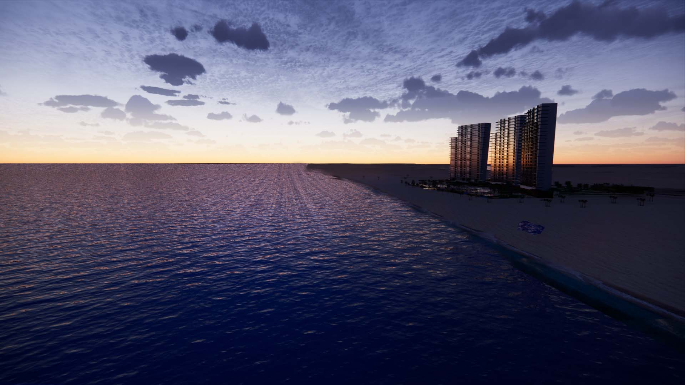
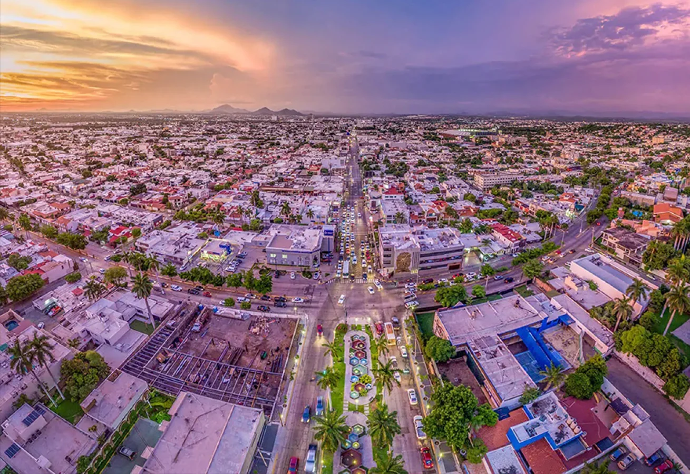

Puerto peñasco
Sonora
Puerto Peñasco, también conocido como Rocky Point, es un importante destino turístico ubicado en la costa noroeste del estado de Sonora, México, a orillas del Mar de Cortés (Golfo de California).
leer masCiudad de México

Ciudad de México es la densamente poblada capital de México que se encuentra a gran altura. Es famosa por su Templo Mayor (un templo azteca del siglo XIII), la Catedral Metropolitana de México, de estilo barroco, de los conquistadores españoles y el Palacio Nacional, que alberga murales históricos de Diego Rivera. Todos estos hitos se ubican en torno a la Plaza de la Constitución, la enorme plaza principal conocida también como el Zócalo.
leer masCuliacán
Ciudad en México
Culiacán, oficialmente Culiacán Rosales, es una ciudad del noroeste de México. Es capital, ciudad más poblada del estado de Sinaloa y cabecera del municipio homónimo.
leer mas